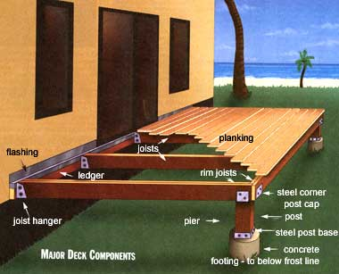
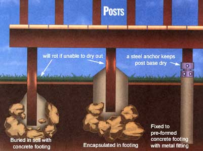
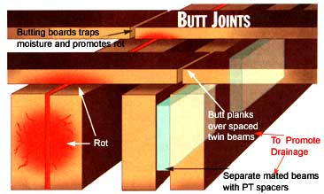
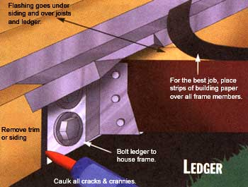
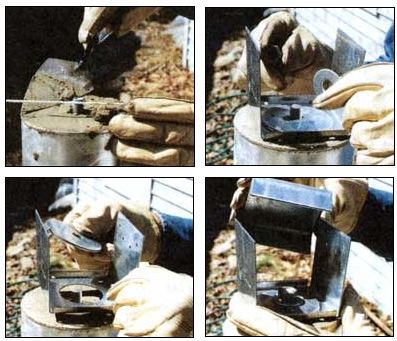
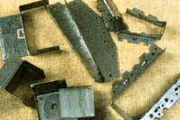
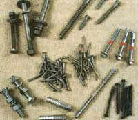
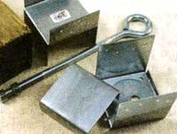
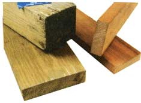

Tools and techniques for building and repair
I learned how not to build a deck one day this spring when mine threatened to fall off the house. I didn't build that deck, understand. It came with the c.1970 mountainside cabin I retreat to now and again. But, to be honest, if I had built the deck by the standards of its day, the same problem might well have occurred.
Though mankind has been erecting wooden buildings for millennia, we seem to learn mainly through hard experience ...and open-to-the-weather, natural-finished wood decks are a comparatively new idea. They didn't begin to replace traditional roofed entry stoops and porches till the concept of an "outdoor room" became popular during the postwar housing boom of the late 1940s and early 50s.
Lacking a porch's roof and water-resistant painted finish, the wood of a deck is fully exposed to the elements. And it took a while for us to learn how to build and maintain a structure that has all of nature's processes allied against it-the wood alternatively soaked and dried, frozen and sun-baked, assaulted by forces of wind and snow, hail, and acid rain, plus, on muddy days, battering from your youngsters' Big Wheel. From nature's perspective, deck lumber is nothing but dead wood to be recycled into forest mold, and the mold into plant nutrients to fuel new growth. Woodpeckers, gnawing bugs, and mildews will attack it from the outside, termites and bark beetles and carpenter ants will bore in and tunnel through the inside, and whole legions of fungi, rot molds, and bacteria will infiltrate it. Together, they can convert a shiny new kiln-dried fir or spruce 2" x 4" x 8' stud to a heap of sawdust in a very few years.
Some woods, however, produce toxic oils that repel insects and kill mold spores and bacteria, serving as pest deterrents for the living tree, and in lumber acting as natural preservatives. Bald cypress, California redwood, the white and red cedars, and a few others will last ten, perhaps fifteen years till the oils degrade or wash out. But cypress has been in short supply for decades. A generation ago, California redwood was plentiful, shipped nationwide, and relatively cheap, so most decks used it. Today, of course, standing cypress is preserved from logging; what little cypress lumber is available comes from old abandoned sawlogs being dredged from river bottoms where they sank 100 years ago-and it sells at antique-furniture prices. As we all know, the once vast redwood forests are being overcut and I for one wouldn't buy fresh redwood even if I could afford it. Even eastern red and western white cedar has become so scarce of late that its price is as high as redwood.
With the cost of naturally decay/bugresistant woods outtasight, most decks today are built of "PT"-common softwood lumber that's been "pressure treated" with rotproofing chemicals. If overhauled periodically, pressure-washed frequently, and treated annually with the latest exterior wood preservatives and waterproofing compounds, the wood in a modern PT deck can hold up against weather, bugs, rots, and molds indefinitely. Modern fasteners and fittings-such as deck screws and the joist hangers used to join the deck frame and beams (joists) that hold the planking-are also made to last of hot-galvanized steel or rustproof alloys that won't "weep"-make those ugly dark streaks of corrosion you see streaming down the wood of so many decks and fences cobbled together with common nails or power-staples.
The latest plans and how-to books and videos incorporate rot- and pest-preventing measures learned over a half-century of practical experience. But, fair warning: the deck plans in the old how-to books you find in every library (and those still sold by some plan services) hark from the 40s, when decks were a novelty. Structure may be too weak to hold up or to satisfy building codes, and lumber/fastener specs will surely be out of date. Most importantly, the latest materials and techniques to guarantee long-term structural integrity and minimize water, rot, and insect damage will be missing entirely. If only to stay legal, be sure to have any construction plan preapproved by your local building-permit authority. They will turn up serious structural deficiencies, but won't mention the modern niceties that can add decades to your deck's service life.
In this article, I will suggest how recent ideas can be applied as you build your own new deck, maintain an older one in good condition, or if necessary, rehabilitate or repair a deck that was built a while back and/or hasn't been properly maintained.
I found out the hard way that my deck had been merely nailed to the house-standard procedure till the mid to late 1980s. And, after 25 summers of alternate waterlogging/drying and as many winters of being hammered by tons of snow that slid off the roof, the big 16-penny nails that held the rear frame of the deck to the house foundation timbers simply pulled out of holes that were beginning to be infiltrated by rot organisms. Fortunately, the deck just pulled out at the rear but didn't collapse, and nobody was on the deck when it failed. If there'd been an adult party going on, or several kids thundering around, the weight of people and vibrations from their activity could have carried deck and occupants to the ground. I have read of high second-story decks where rot infested the entire joint between deck frame and house foundation, rotting out both timbers and leading to just such a sudden and catastrophic failure. Thankfully, there've been no casualties ...so far. Here are measures you can take to assure that it isn't your deck that makes the evening news.
New Construction
We lack space to describe a complete deck-building project; there are dozens of deck books, plans, and how-to videos available. I'll confine myself to pointing out potential problems and suggesting ways to avoid them in building a deck.
The boxes describe pressure-treated wood, rustproof metal fittings, and other materials, plus the major tools you need. Skimping on quality and price of wood or fasteners is false economy-just begging for trouble in the future. And, more backyard building projects lie half-finished under an early snow at season's end due to too-small or too few tools than for any other reason I know. Fighting an underpowered saw or a dull blade causes nothing but frustration that can quickly dampen your amateur-builder's enthusiasm. The overtaxed blade can slip, bind, or backlash and injure you as well. Buy or rent good tools-better oversized and overpowered than under.
Then, support your deck better than indicated in many plans. I've been criticized for "overbuilding"-recommending more or larger timbers or fittings than standard practice and plans indicate. But standard practice presupposes professional carpenters with the experience to avoid major errors, and standard plans assume a builder who knows how to eval uate and install boards and timbers, nails and bolts. I'm not a pro and you aren't either and I think it's better to overbuild than risk failure.
First, it never hurts to overbuild your deck's weakest link: the piers-a combination of rock or concrete footing and wooden posts that support it out in front. If a plan specifies spindly little 4" square wood piers, I use 6" posts; if 6" is specified, I use 8" posts. Not only are the larger sizes sturdier, they look better-giving a deck (especially a high one) a more substantial look. (Hint: take a photo or draw an "elevation"-a scale drawing-of your house facade. Sketch in a deck to scale using several post sizes. I bet you'll like the larger widths better. And the price difference isn't all that great.)
Then, don't let the lumberyard stockpicker choose your posts. You don't need many, so select your own. The sidebars give general guidelines for choosing lumber. For posts, be especially picky. Choose posts with flat and even sides and a straight grain-no warps or major twists. No large knots, splits, and holes to admit rot, either. Pick long posts and split them if (as is common) the 8-footers all contain sapwood-that won't accept pressure treatment, and so rots fastest.
Install posts atop concrete or mortared-rock footings to keep them away from soilborne water and wood-rot organisms. If you bury even top-rated .60 PT in the soil, you can cut its useful life by half. Don't just set the posts flat on the concrete either. Buy metal post-base fittings that anchor into the footing and raise the post to keep water from entering the vulnerable cut end.
Seal those cut ends (both top and bottom) of all vertical posts ...with multiple coats of a wood-penetrating preservative and a waterproofer. Indeed, it doesn't hurt to soak the posts in a bucket full of a fluid sealant for several weeks to let it soak into the wood. Be sure to wrap the top of the bucket and protruding posts with plastic sheeting to prevent wasteful evaporation.
Before Cuprinol and other modern wood preservatives came along, old-time farmers would soak ground beams and fence posts for a year in a pit filled with rock-salt/saltpeter brine. Then they would dry the saturated timbers and burn the surface of ground-contact portions to seal the wood behind a bug- and fungus-repelling coating of char.
A soaking or coat of pine tar or liquid creosote also produced timbers that would hold up for decades. Creosote has been found to be a topical carcinogen and has been withdrawn from the consumer market by the EPA, but pine tar is sold in bulk as horse liniment and will dissolve in turpentine to make a wood-soaking bath.
Dreaded Dry Rot
Deck damage sneaks up on you. Boring insects and wood rots operate just under the surface of a board, weakening the wood slowly and invisibly. But termites and ants give themselves away by leaving little piles of sawdust or mud tunnels. Occasionally they bore through the surface of a board, exposing a portion of tunnel. Sometimes in the quiet of the night you can even hear them munching! But these social insects don't live in your house; they maintain queens and brood in nests in the soil. Their entry can be barred by keeping wand out of direct contact with the ground and inspecting frequently for the paths or tunnels the critters make into the house, or by hiring an environmentally responsible exterminator.
But dry rot fungus doesn't need a pathway to your deck. It sprouts from tiny airborne spores that are literally everywhere. Once a spore is windblown onto moist wood, it sprouts microscopically and begins to grow down into the wood- silent, invisible, and insidious. I've seen many (and replaced more than a few) support timbers under decks and porches and in the cellars of old buildings that looked perfectly sound at a casual glance. But you could sink your penknife blade in 'em up to the hilt; the beams were little but shells with the inside turned to frass by dry rot fungus.
Only when the dense network of dead-white filaments that make up the body of the fungus plant have permeated and fed off the wood will the plant make its presence evident by sending out fruiting bodies that range from foot-wide gray-white half rounds of shelf fungus to the small pink, black, or grey fleshy blobs or mini-mushroom-tipped branches of less grandiose species.
Dry rot, by the way, isn't "dry" at all, but consists of a group of terrestrial fungi (related to common mushrooms) that, like all land plants, need plenty of moisture, oxygen, and moderate temperatures. Colorless and lacking chlorophyll to work nature's magic and create organic carbohydrates from sunlight and components of inorganic air and water via photosynthesis, they live in the dark and feed on dead plant material, indeed they are the prime medium of nature's recycling process.
"Dry" rot got its name because it attacks timbers of wooden ocean-going boats that have been hauled out, "high and dry," so that planking shrinks, seams open up, and the hull needs to be "soaked up" before launching or pumped out continually for hours after ...or the boat will be on the bottom next morning. It is rainwater trickling in to moisten boatwood that supports "dry" rot. Sea water (though it does harbor wood threats of its own) does not support fungi. Neither will standing fresh water; a deck post that's sunk into consistently wet ground will remain sound below the soil and above it. It rots right at the surface line where it stays just moist all the time. Temperatures must be moderate for fungus to grow-above freezing but less than 100°F or so-so if you build your deck somewhere above the arctic circle or in the Mohave Desert, it will last with little care, though its utility will be limited.
Older Construction
If you move into a house with a buried-post deck, you might try the methods I used once to add years to the life of several still-sound but vulnerable old hand-hewnwood-post fence gates. With a hand auger and half-inch-diameter, foot-long spiral bit, I drilled deep holes down the center of the post tops and kept them filled with linseed oil all summer. I also capped the posts with old sheet-zinc roof flashing to keep out the rain. Sun-heated, the oil soaked in to revitalize the old wood. I brushed the outer surfaces of the dry old wood with deck preservative till it wouldn't absorb any more. Then, before the fall rains began, I doused it with sealant.
To deter underground attack, I poured a ring of rock salt around the base of the posts. It gradually dissolved in the rain and soaked down into both soil and post end. I don't recommend salting the soil on any large scale. (Roman conquerors salted the fields of defeated enemies.) But a few cups of salt will repel bugs and molds from the gallon-milk-container-sized core of soil surrounding a buried wooden post.
Alternatively, dig out soil around buried posts as far down as you can and replace the soil with good-draining crushed rock or gravel. Pack well with a length of 2 x 4 as you add each three inches of rock.
Aboveground, rot enters most readily where rain water flows in but can't evaporate-in the small spaces at the junctures of posts and beams and where fixtures and fittings attach to wood. Look for the black stains that betray spore-making activity.
Give special attention to the back or sides of the deck where it mates with the house. Such places where the sun never shines and where wood remains wet year-round can become a fungus garden unbeknownst to you.
Many deck backs and corners are too close to the soil to permit a ground inspection. If the more easily inspected joints out front are moldy, the hidden ones will be more so. Pull up enough decking to get at the back-even if you must sacrifice a few nailed-on 2 x 4 deck planks-then, in replacing the decking use easily removed self-tapping deck screws (see page 33). To let the area dry out thoroughly, leave it exposed to air and sun over the summer. If you have the perseverance, cover with a strip of plastic when rain threatens.
Dig out wet and mushy soil and the or ganic debris that accumulates under a deck. Trench under the deck if need be to drain the soil.
Around the deck perimeter, root out close surrounding brush to let sun shine in. Pull away climbing vines, floor coverings, leaning boards, or anything else that can trap moisture. Remove shade-making umbrellas, tables, or awnings so sun can get in to heat and dry out the wet spots.
When the wood is dry as possible, soak problem areas with a powerful fungicide made for docks and decks. Undiluted household ammonia will also serve-but only as a short-term measure. I use a stiff brush to scour out the black stain, though it offers little added benefit beyond cosmetic. A hand spray bottle is good to force the mold killer into all the cracks and crannies. Repeat every few weeks till fall. Then, let dry again and soak with deck preservative, followed by a sealant.
Check all fasteners on an older deck. Give any bolts a crank to assure they are tight. If any bolt holes have rotted out or any nails are working out, extract and replace the fasteners. Drill out rotted bolt holes to sound wood and install a larger fastener. Replace nails with deck screws that are fatter and longer than the nail. Infuse newly exposed fastener holes with fungicide and preservative. Poke splints into oversized holes to give the new fastener a good purchase. I whittle toothpicksized splints from high-grade PT lumber.
New and Old Ideas
Especially when adding service life to decks made from cedar and other untreated woods, carpenters are using an old material-tar paper, or more properly, heavy building paper or builders felt. This is a loosely woven, absorbent paper-cloth infused with asphalt that is commonly tacked over wooden roof sheathing to provide a waterproof underlayment for roof shingles.
Cut into strips that are wider by an inch than deck framing, it is stapled to the top surfaces of joists so it overhangs each side by a half-inch. Decking is fastened over the paper. Especially if planks are fastened tight with deck screws, sunheated asphalt will soften and form a watertight gasket between bottom plank and top of joists, and seal around fasteners. Rain water flowing through cracks between planks can't soak into bottom of plank or top of beam, but drips off the edges of the paper.
You can cut tar paper strips from standard rolls, or buy precut strips at most lumberyards. The black paper will make a sharp color-contrast with decking at first, but after stain, sealers, and preservatives are applied, wood and asphalt will gradually fade to a uniform shade.
Water does its worst damage at frame joints-where several rim joists meet at corner posts.
To minimize water intrusion, sandwich sheet tar paper between butting surfaces of posts and beams and fasten tight with lags. Then use a modern clear, flexible silicone sealer to caulk all the top-side and vertical seams.
Cut a gasket to fit over the top of the entire joint-covering top of post and meeting joists and overlapping all edges by at least a half-inch. Spread a bead of caulk around the edges of paper, and apply it before fasting planks.
If some water does get into tarpapered joints, creosotes in the tar will give your wood the same protection that keeps creosote-soaked railroad ties and telephone poles standing for 50 years-but in your deck it can't wash off.
A modern-caulk-and-old-fashioned-tarpaper-protected deck should last as near to forever as a wood structure can hope to.
Special Tools for Decks
CUTTING
Though they are hard work and can be something of a nuisance, you're going to need a hand saw to finish off many power cuts, and you can build a whole deck with one if you have the time and muscle. But an electrical saw makes the work go a whole lot faster. A benchmount cutoff/sliding miter saw is ideal for this work; it makes perfectly straight and square cuts with a simple pull of the handle. But a good one costs over $300 and requires a long, level support for the boards. Plus, each board must be carried from the stack to the job and measured; then, it must be carried and hefted up to the saw, cut, and then hauled back to the job. Cutoff saws are a great time-saver for a two- or three-person crew: one of you measures and hollers out the dimensions; the other does the cutting and carrying. Hand-held circular saws are best for a solo operation. They make less-precise cuts, but you carry them right to the job. And they cost a fraction as much.
A standard circular saw with a 7 1/2"diameter "combination" or rough-cutting blade will chop up 2 x 4s to frame a house just fine. But for decks I recommend the most powerful saw and widest blade you can handle easily. You'll be cutting up a stack of 2 x 10 frame boards that will bind up a dull blade and stop a low-power electric motor midway through the cut. A 6" or 8" square post will require at least two passes, and an inadequate blade in that thick stock will bind, burn and smoke, chatter and kick back, wobble and cant in the cut and drive you nuts. Decks are usually planked with 2 x 4s, and trimming their visible outer edges requires a neat cut; a heavier saw with more power and a wider blade will cut them clean, twice as fast, and with fewer off-center sawlines.
My Black & Decker Sawforce 300 is typical of the premium homeowner-grade saws made by all power-tool manufacturers. Its 10-amp (2 1/2 hp) power, accuracy, and cost are a cut above standard, but the added oomph and weight makes it a joy rather than a trial to use in heavy lumber-especially when I have to hold the blade horizontal to section out rotten sections of deck posts in place.
Your saw may come with a standard-quality combination blade that is okay for rough framing. I suggest spending another $20 for a carbide-tipped crosscut blade. It will last several times longer and the alternate-set teeth designed specifically to cut across-not along-wood fibers will produce clean, smooth cut ends that resist water better than the ragged cut from a cheaper or less specialized blade.
For the really tough saw jobs like cutting through old decking, nails and all, or in tight quarters where a circular saw won't fit and a little wood-handled keyhole saw would take a week, such as trimming out rotted deck-joist ends without removing the decking nailed on them (and other restoration tasks where you are often as not bent double or half standing on your head or with one foot in a mud sump or all of them together) you need a saw that is powerful but will get a blade in almost anywhere. You need a reciprocating saw-an ugly and ungainly foot-and-a-half-long, more or less cylindrical tool that holds a thin blade by one end and moves it forward and back rapidly, but with unstoppable power. The blades twist and break and make a sloppy, ragged cut. The saws are heavy and awkward to use, and they will rattle your teeth. Plus, they cost $120 and up and you won't need yours often. But believe me, when you do need it you'll discover that there is nothing that can do what a "Supersaw" can.
FASTENING
You'll want a 3-pound hammer occasionally in any carpentry work, but to sink a deck full of self-tapping deck screws you'll need a power driver. This is an electric hand drill geared down I to generate enough torque to insert self-tapping screws directly into any thickness of soft wood without having to drill pilot holes. Cordless models are most convenient and variable-speed controls are most flexible. They come in 5- to 12-amp versions; I find that the hardware store 7.5-amp and smaller models are great for household chores but underpowered for deck framing. I have used Makita drivers (U.S. made) for decades and find a 9.6-amp model a good compromise between power and weight. Batteries recharge in an hour and a pair provides plenty of power for nearly full-time work.
Get a dozen double-ended, magnetized Phillips-head powerdriver bits. When fresh, the cross-tip screwdriver-type bits fit deep and snug into the screw heads and the magnet will hold them tight, freeing your off hand. But the bits are intentionally made to be slightly softer than the screws, so they become burred and lose holding power over time. Don't be hesitant to replace a bit when it starts slipping off the j screw heads. Like a dull saw blade, a burred bit is frustrating and can slip and damage the work. Staying with it when a 50 cents replacement is called for is false economy.
Check for Wobbly Joints
At corners and line-post locations, put a shoulder to the deck and see if the boards move relative to one another in the joint. If so, pull any nails that come out easily and replace with deck screws or lag screws long enough to reach almost through the joint. (Lags are big, fat screws with a hexagonal head so they can be turned in with an adjustable wrench.) If nails won't come out, sink lags or deck screws between them. As above, drill out rotted bolt holes and install larger fasteners. Don't spare the deck preservative!
If the deck's planking bounces when you walk on it, the joists are weak or were too small to start with. If a check under the deck shows that beams bow down obviously, install "sister beams":-new sections of wood that are screwed on beside the originals. Or install new beams and joist hangers between existing beams. A new support post or two-run from a new concrete footing up to a sandwich of two lengths of 2-by planking running between two or three joists-can help as well.
If (as was the case in my deck) you find that major joints have begun to separate, you must make repairs or the internal movement caused by normal use and temperature fluctuations will work the joint till it fails. To support the deck while you work, get one or more floor jacks. Not expensive house jacks, but floor jacks that consist of 1" vertical screws topping heavy steel posts. One of them can hold up the corner of any deck made, and they only cost about $15 apiece. Use them to jack up the platform to relieve pressure on sprung joints for repair, or to lift sagging beams so you can install new supports. Crank deliberately so the platform is raised gradually (a half inch a day) to let the structure adjust.
Often a few cranks of a jack will cinch a parted seam tight, and you only need to refasten or reinforce it by deck-screwing flat, hole-punched truss plates over both sides of the troublesome joint. If settling posts, sagging beams, or weak joints have separated major portions of the deck (as, for example, when all but the corners of my front deck pulled away from the house), or if a joint remains parted even after jacking, you can use rope or chain and a "come-along"-a hand-ratcheting block and tackle-to winch it back together.
If central portions or ends of a few floor joists are badly deteriorated, it is easiest to set in new beams and hangers beside the damaged ones. Or, you can jack the beam, cut out the rotten center span, or cut off damaged beam ends and pull the hanger, then add "sisters"-lengths of new wood at one or both sides of the original beam. Fasten new ends to the ledger with new hangers.
It's best to sandwich the original beam between a pair of sisters, connecting them with through-bolts (carriage bolts with square heads that lodge in the wood), washers, and nuts.
If the front rim joist (the frame member that supports the front end of the decking and holds deck-front joist hangers) is shot, you may be able to sister a new length of PT outside of it and fasten new hangers between the old ones by running long bolts through thickness of both old and new wood.
If one end or another of a post is damaged, or if a knot has admitted significant rot, it is easiest to use floor jacks to support the deck and replace the entire post on all-new fittings. Prying off old nailed-on fittings takes a hammer and pry bar with a chisel end, plus a strong arm and patience. It'll make you wish they'd invented removable deck screws 25 years ago.
The most severe problem I've encountered is where the ledger board (the rear frame member) is rotted out-usually because the deck-to-house joint was not constructed so it excluded water. If major portions of the ledger are wet and soft, you can be fairly sure the decay extends into the house foundation-threatening to compromise the board (the sill or bottom plate) that supports the walls and roof. A rotten sill calls for major reconstruction that's beyond the competence of most amateurs. Don't put it off; once a sill begins to go, the whole house wall will begin to rot from the bottom up.
I wouldn't trust a deck with very many bad joists or post ends or a rotten ledger. I would pull the whole thing, saving what good wood I could, and rebuild, weatherproofing correctly and fastening with removable deck screws.
Good Joints
Nails are inadequate to hold a deck frame together. Fasten (or refasten-as above) posts to platform beams with 1/2" or 3/8 lag screws or carriage bolts. Similarly, fasten or refasten ledger boards to the house with lags. Use lag screws if the sill is a stout timber. If the deck butts up to less substantial siding or frame boards that you can get to from inside the house, tack the ledger on with nails, drill holes through ledger and house, and fasten with carriage bolts. Put washers behind the inside nuts. In thin walls use metal backing plates behind the nuts-or center-drill foot-squares of 1/2" plywood, butt them up to the inside surface of the wall, and fasten through the drill hole.
If you drill into a hollow that you can't get to from inside the house, fasten with a Molly-type expanding bolt. These are hammered into pilot holes; then, application of a wrench or driver pulls a center rod forward, spreading the wings of the expansion device against the inside of the wall. Once in, these things don't come out, so mark and plan carefully.
If you find serious water damage in a wood ledger attached directly to a concrete foundation, the fasteners may also be rusted out. Drill new holes with a masonry bit and fasten with fresh expansion bolts or with lead or plastic masonry anchors. The different styles of masonry bolts specify the size hole (and bit) they require. Apply a coat of black-tar below-grade waterproofer to the concrete under the ledger board and fasten it with the long size of the largest bolts you can find.
Flashing
In all cases, waterproof the deck-to-house juncture. Your home's exterior is designed to provide a continuous shed for water from roof peak to the ground. Water just rolls down brick, stone, and well-chinked logs. Frame houses are clad with sheet goods, clapboards, or shingles. Any interruption in the flow such as a dormer on the roof, a door or window in the wall, or a deck along the foundation must not interrupt the flow, or water will stand and infiltrate, bringing rot with it. To maintain flow over and around obstructions, you must install a water guide-typically a strip of thin copper or aluminum sheet that is cemented to brick, concrete, or plywood siding or shoved up and under overlapping cladding above a shingled or clapboarded wall, then bent out and down over the upper surface of the door frame, deck ledger, or whatever. The water flows from cladding over the flashing that covers the intrusion in the flow pattern, and on down.
Too many old deck ledgers were just nailed on right over clapboards or shingles, perhaps with a strip of caulking squirted along the joint. Especially when fallen leaves clog the seam between the rear deck plank and house, water will accumulate and soak through nail holes or creep under the cladding and into the house.
Below the Mason-Dixon line you can attach a ledger directly to the house sheathing (with cladding removed). But flash it in. Remove one course of overlapping cladding or house trim under the ledger so it makes a solid, flush joint with house sheathing or foundation beam. Slip a foot-wide strip of flashing up under the sheathing above the ledger, and bend it sharply out and over the upper edge of the ledger, and down and over the face. Fasten joist hangers over the flashing-punching the hanger fasteners through the metal. Then, don't butt ends of joists hard to the house; leave a good 1/8" of drain and airflow space.
In sheet goods siding or on a masonry wall or foundation there is no cladding to snug the flashing up and under. Bed the upper edge of the flashing in a continuous bead of waterproof adhesive. Staple top of flashing onto wood sheathing, or set into a groove chiseled in ceramic or made by chipping mortar from joints in block or brick. Coat the top of the seam well with more adhesive. Check and, if need be, refresh the adhesive every fall when you button up the house against winter cold.
Snow Country
In the north, snow and ice can build up at the junction of deck and house wall. In warm spells it will thaw partially and slush will flow between ledger and foundation, then refreeze, swell, and force the ledger off its support. (That's in part responsible for the problem in my deck.) Fasten ledger to house through a series of spacers or freeze blocks that provide expansion space in the joint. From scrap ledger board stock (2" x 10" or 2" x 8" PT lumber) cut as many squares as you have joists. (Or build up squares from exterior-grade plywood the same width as the ledger is wide. Tack squares together in pairs to make 2"-thick freeze blocks.) Marking carefully, remove squares of cladding as needed to attach the blocks to the house sheathing under where the ledger will attach. Locate blocks between joists and fasten securely as indicated above. Affix a strip of flashing 2" wider than the freeze block above each block location. Attach blocks in a bead of caulk and add more caulk to make a fillet (like on a window pane) all around. Fold flashing down over block, and fasten ledger through the metal sheet with lags that are long enough to pass through ledger and freeze block and into the sheathing. Fasten on hangers and proceed.
Build well and carefully, then keep the wood in shape with an annual cleaning and rot- and waterproofing, and your deck will stand the hard test of time.
At the Lumberyard
The EPA recommends that you not handle PT lumber so fresh from the processor that it is still wet, and that you wash your hands after handling any of it. So, when you go for deck materials, take a pair of gloves and leave the small children at home. If you do buy still-wet PT (it will be weighty and a bright copper green), stack it loosely in the weather till it loses the heavy, water-logged heft and the color fades to a dusty green.
Warranties
Pressure-treating firms that are members of a wood-treatment association will stamp or tag each board with their own guaranteed rating. Many larger lumberyards buy locally produced no-name/no-tag PT and sell it at bargain prices. Any of it is only as good as the yard's reputation.
Let's face it, a 25- or 40-year "guarantee" isn't worth a whole lot. How many of us will be living where we are now in the year 2021 or 2036? How many lumberyards or PT makers will be around to honor the guarantee-which is a "limited warranty" that's worth no more than the retail price prorated over the guarantee period (and not adjusted for inflation). Plus, you need the original sales receipt, after a quarter or almost half century. If you could locate it, the register ink would have faded and the carbon-flimsy crumbled to dust.
Another caveat: the sappy heart wood of softwood lumber will not absorb much CCA. A post cut out of the sapwood center of a log can rot out on the inside, unseen and unsuspected despite the PT. So, when you go through the lumber stack selecting boards that are unwarped and that contain no open knots or cracks, don't choose any showing the small, tight circles and brownish tinge of a sapwood core either.
No preservative alone can keep water from soaking into the wood and gradually leaching away the protective chemicals and introducing rot organisms. When you pick up your lumber, buy enough waterproofer to treat the entire stack-all sides. Pros will chuckle if they see you at it. But you are adding years more service to your deck if you slap a good coat of waterproofer over b oth sides of each board and twice on each end before you put it into the deck. At least, waterproof insides of all joints (every place that one board touches another) before you fasten them.
You can skip this step (even if it costs 5 to 15 percent more) by investing in national brand names of PT that are premium boards impregnated with a wax waterproofer along with the CCA. The huge lumber firm Weyerhauser sells PT under its own name; a few other brand names that are reliably well made include Weathershield and Wolmanized Extra.
But no matter what kind of PT you use, make and enforce your own guarantee; apply a deck preservative and a waterproofer with a brand name you know for sure, and do it every year.
Fixtures and Fasteners
The PT frames of most decks these days are joined using a variety of steel brackets: joist hangers, post bases, and connector plates in T, L, and other shapes and angles. Needing only to be nailed or screwed on, they make the work go much faster and, if used with good, properly treated lumber, produce joints that are stronger and will last longer than old-style notched-wood joints or even elegant mortise-and-tenon joints. Select fixtures made from steel that's been hot-dip galvanized; it will have a rough, mottled metallic-silver finish, as compared to the uniform, smooth surface of conventional zinc plate. Do not drop or nick the galvanized fittings; the hot-dip can chip off, admitting rust. Unchipped, they'll last a lifetime or two. To buy yourself a decade and more of added rust preventative (that the pros will tell you is really overdoing it) spray fittings on all sides and in the screw holes with a rustproofing enamel paint before you fasten them on. Silver color lasts longest.
If you want to hammer your deck together, buy special deck nails. These are hot-dipped, so rough to the touch. But, most important, they are fatter and shorter than other nails, designed to hold tight in 2-by lumber without punching through to split and weaken the boards.
Years ago, I swapped my framing hammer for a power-driver (see page 33) and I now fasten decks and most all else I build with self-tapping screws. It ain't cheap. A good drill/driver costs at least $100 and screws are sold by count rather than weight at better than ten times the cost of nails. But power-driving takes less muscle and experience than hammering. It goes faster in the long run, dings and splits fewer boards, and-most important to me-the screws can be backed right out, while a nail sunk to the head, holding a steel deck plate onto good wood, is there to stay. Deck screws let me correct my inevitable amateur-builder mistakes and they make repairs and rot-replacements easy. Just be sure to get the silver deck screws,not the similar, but thinner, black drywall screws meant for inside use. Deck screws are less brittle than drywall screws and come in nonrusting metals, so they won't corrode, "weep," and stain your wood.
"Backyard Projects" continues with "Natural Paths and Walkways."
Lumber and Hardware
Pressure treated lumber, or PT, used in most decks is made from standard "dimension lumber"-square timbers and nominal 2" thick boards cut in even-inch widths from 2" to 12" and in even-foot lengths from 8' to 20' or more-from a good-building wood such as one of the southeastern yellow pines or western Douglas fir. It is heated and dried to less than 10 percent moisture content in a big kiln, then saturated under pressure for an hour or so in a bath of hot preservative. By standards promulgated by regional wood-treatment associations, the lumber must be impregnated to at least 85 percent of its thickness and to a preservative content of between .25 to .60 pounds per cubic foot of wood. Low-rated timbers are cheaper than the higher rated. But using them in your deck is false economy. A .40 rating certifies that lumber will survive full-time ground contact for 40 years. Kept off the ground and treated annually with preservative and waterproofer, the wood should last as long as the rest of the house. Use .25 outdoors, but for sheltered applications (a roofed deck), and save .60 for especially hostile environments such as along the ultra-humid Gulf Coast, inland in subtropical southern Florida, or as posts for a freshwater dock or saltwater pier.
The standard wood preservative is CCA, or Chrome-Copper-Arsenate. It is a long-acting but relatively benign heavy-metal poison-but a poison nonetheless-that kills mold spores and bacteria and deters bugs and gnawing animals. Older formulations give the wood a corroded-copper-green tint that fades to a pleasant silvery grey in 6 months or less. Newer compounds lack the green color.
A new product called ACQ just now coming to market reportedly works well without incorporating poisonous chromium and arsenic. It does use a copper compound as a fungicide, so remains moderately toxic.
Wear a dust mask while cutting any kind of PT. Shower or wash head, hair, and hands, and launder clothing afterwards. Don't burn scraps in the wood stove; they don't qualify as toxic waste, so you can send them to the dump. Better, use them for steps or pathways in the flower garden (see "Natural Paths and Walkways" on the next page).
As you know, I am in the process of repairing a deck built of (40-year-guaranteed) PT that is showing fungus damage after (only) 26 years in the weather. So I remain unconvinced by industry and EPA assertions that the chemicals in pressure-treated wood don't leach out, and (in a seeming self-contradiction) that if they did, they'd be diluted to harmlessness. PT contains arsenic, and didn't Agatha Christie make a career cooking up mysteries where someone was poisoned by a slow buildup of that very poison? A little Arsenic and Old Decks, anyone?
I wouldn't grow fruit or vegetables, locate a kids play area, graze or house livestock, or put a dog run within 100 feet downhill of a new-built PT deck. Maybe in a decade...
|
Bill Yasinski perched on his newly completed deck in Catskill, NY. Measuring 10' x 18' and designed as an elevated entryway to Mother's log cabin; the deck, complete with footings, took just over two days to build |
 Deck pier assembly. Above left: Topping concrete footing. The remaining photos show the attaching of the post base fixture to the footing |
 Deck fittings |
|
 Pressure-treated post and beam and redwood planks. |
 Pressure-treated post and fittings |
 Lumber and Hardware |
|
 |
 |
 |
|
 |
|
|